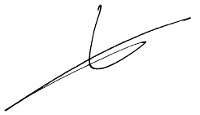

A/a del Departamento de Recursos Humanos.
Valdepeñas a 16 de junio del 2017
Estimados señores/as:
Me dirijo a ustedes con el proposito de que me tengan en cuenta para el proceso de selección de su oferta de trabajo. Ya que cumplo los requisitos que exigen en la página donde publican su oferta. Soy una persona polivalente y me adapto a cualquier puesto de trabajo, además de tener más de 10 años de experiencia como Administrativa.
Acabo de terminar el Certificado de Profesionalidad de Diseño de Páginas Web, por lo que creo que soy idonea para su puesto trabajo.
Es por todo ello que me gustaría me concedieran una entravista de trabajo.
Un saludo y muchas gracias por su atención.
María de la Paz